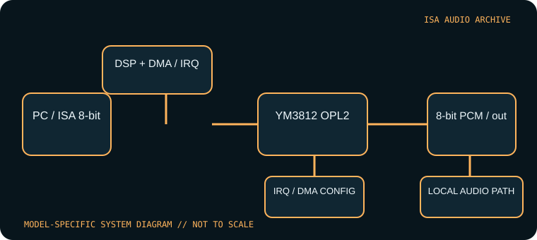

[ INDIVIDUAL COMPONENT // SOUND HARDWARE ]
Creative Sound Blaster 1.0 (CT1320A)
This record is limited to the original Creative Sound Blaster 1.0 CT1320A board. Later CT1320B/1.5, Sound Blaster 2.0, and Sound Blaster Pro cards have different model identities and should not be inferred from this entry.

Model-specific specifications
| Catalog identity | Creative Sound Blaster 1.0, CT1320A. Confirm the complete CT number; a family badge alone cannot establish board revision. |
|---|---|
| Bus / host | 8-bit ISA; intended for IBM PC-compatible DOS systems. It fits an 8-bit slot; an AT 16-bit connector may also accept it, but does not turn the board into 16-bit audio. |
| Sound engine / I/O | Yamaha YM3812 OPL2 music plus Creative DSP 8-bit mono PCM. Typical Sound Blaster I/O base is 220h; jumper-configurable alternatives and exact switch positions must be verified against the CT1320A setup material. |
| IRQ | Jumper-selected legacy IRQ, commonly 2/5/7 depending on documented board configuration. Avoid conflicts with system devices; test the selected line with Creative diagnostics. |
| DMA | 8-bit DMA selection (commonly channel 1 or 3) for sampled playback/capture; no 16-bit DMA path. Keep the BLASTER environment setting synchronized with the hardware. |
| Software / host compatibility | Creative DOS initialization/diagnostics and game drivers; DOS titles can select Sound Blaster digital audio and AdLib-compatible OPL2 music. Period Windows drivers are version-specific; no contemporary OS support is implied. |
| Connections / power | ISA slot power, mono audio output, microphone input and game/MIDI interface as fitted. Inspect the CT1320A backplate and board rather than assuming later Sound Blaster connectors. |
Compatibility & configuration notes
The CT1320A introduced the key split between OPL2 music and DSP-driven PCM effects that many DOS programs expose as separate settings. The latter consumes an 8-bit DMA channel and an IRQ; music-only use through the OPL2 does not by itself prove the PCM resources work. Original driver archives are useful for diagnostics, but should be matched to CT1320A and the host’s port/IRQ/DMA choices. Preserve the jumper map, driver version, and a known-good BLASTER line with the card.
- Photograph model/revision markings, resource switches or jumpers, connector panel and installed options before installation.
- For every configured IRQ, DMA channel, I/O address and driver, record the actual setting used by the host; do not rely on a family name or an assumed default.
- Power down and unplug the host before fitting or removing an ISA card; retain period setup tools and documentation with the specimen.
Sources & archival documentation
- Internet Archive — Sound Blaster CT1320A manual searchArchival index for model-specific original manual scans.
- DOS Days — Creative Sound Blaster history and setupHardware-family reference for early Sound Blaster compatibility and configuration.
Where related model variants exist, the original manual and the physical card’s complete part/revision marking take precedence over generalized family summaries.